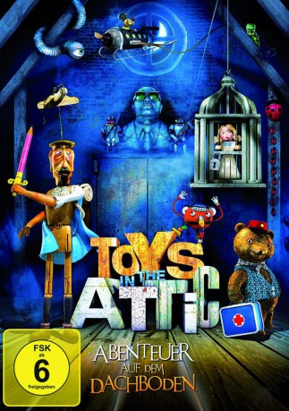
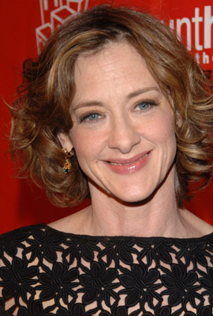
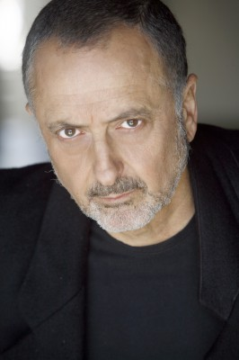
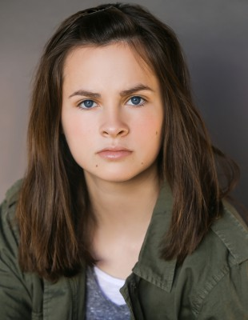
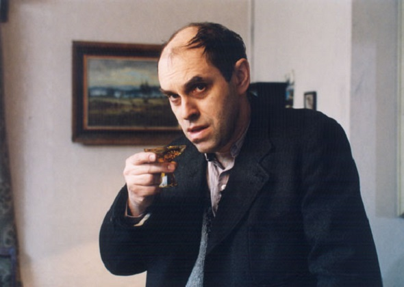

#3920 Toys in the Attic
 
 IMDB-Wertung: 6.3 / 10
IMDB-Wertung: 6.3 / 10  Metascore: 0
Metascore: 0 
Auf dem Dachboden eines alten Hauses in Tschechien: Inmitten von altem Gerümpel und vergessenem Spielzeug führen der Marionettenritter, die mechanische Maus, der Knetgummimann, Teddy und die liebreizende Puppe Buttercup ein unbeschwertes Leben. Der bunte Haufen vergnügt sich tagein, tagaus mit einer Eisenbahn, bekämpft Drachen oder feiert Geburtstag. Erst als der böse Goldmann aus dem östlichen Teil der Kammer, der sich sein eigenes Königreich geschaffen hat, plötzlich Gefallen an Prinzessin Buttercup findet, droht dem harmonischen Treiben der Freunde ein jähes Ende. Er sendet seine finstere Armee von Insekten und verdorbenem Gemüse aus und entführt die unschuldige Puppe in sein dunkles Reich. Doch hat der Unhold nicht mit den aufopferungsvollen Freunden der Entführten gerechnet. Ein gefährliches Unterfangen beginnt, bei dem nicht nur die Rettung der verschleppten Buttercup auf dem Plan steht, sondern auch das Ende der Schreckensherrschaft Goldmanns herbeigeführt werden soll.
Jahr: 2009
Dauer: 77 Minuten
FSK: 6
Land: Tschechische Republik Studio: Ascot Elite Home EntertainmentTonspuren:
Untertitel:
Auflösung: 1080p (1920x1040) Größe: 4188 MB
Genre: Thriller, Fantasy, Animation/Trick, Familie
Regisseur: Jirí Barta, Vivian Schilling
Drehbuch: Carlo Collodi
Soundtrack:
Darsteller:
 Forest Whitaker als Teddy
Forest Whitaker als Teddy-  Joan Cusack als Madam Curie
- Vivian Schilling als Buttercup
- Cary Elwes als Sir Handsome
-  Marcelo Tubert als Laurent
- Douglas Urbanski als The Head
-  Emily Hahn als Andrejka
 Sandy Holt als Mrs. Nemachkova
Sandy Holt als Mrs. Nemachkova Rico Simonini als Black Cat
Rico Simonini als Black Cat- Roy Vongtama als School Boy & Monkey
- Ivan Trojan als Subrt
- Joy Ellison als Rosie
- Barbora Hrzánová als Sklodowská
- Boris Hybner als Mucha
- Vladimír Javorský als Krason
- Nada Konvalinková als Ruzenka
- Johana Krticková als
- Vera Kubánková als
- Jirí Lábus als The Head
- Petr Nározný als Baron
- Lucie Pernetová als Pomnenka
-  Miroslav Táborský als
- Ludmila Ungrichtová als
- Andrea Zádníková als
Datei: X:\Kinder Filme (N-Z)\Toys in the Attic (2009, FSK6, 1920x1040).mkv seit 30.06.2016
Festplatte: Kinder-Filme+Trick
 Es gibt insgesamt 87 Filme in der Gruppe 'Kinder Filme (N-Z)'
Es gibt insgesamt 87 Filme in der Gruppe 'Kinder Filme (N-Z)'